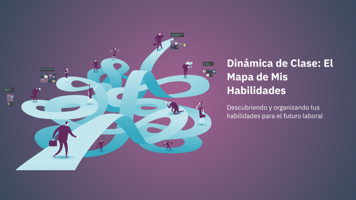
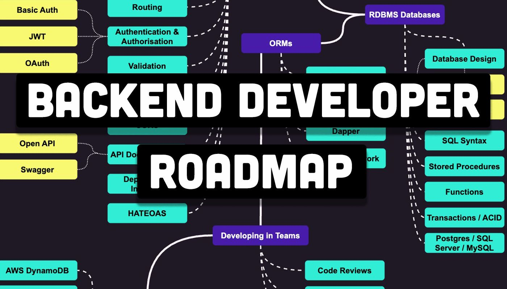
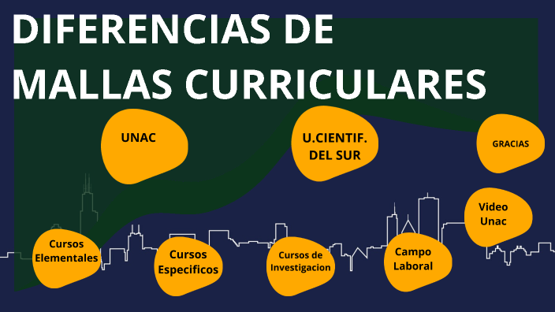

Bienvenido a
SENDA
Software de Estandarización de Niveles y Dependencias de Aprendizaje
Explora tu Camino Técnico

TREEMAP
Organiza y mide el nivel de tus habilidades actuales. Permite identificar de un vistazo tus puntos fuertes, las áreas que requieres reforzar y la distribución de tu conocimiento técnico dentro de tu perfil profesional.

ROADMAP
Traza la ruta de aprendizaje ideal para tus metas. Permite estructurar los pasos necesarios para dominar una tecnología, organizar los cursos que debes tomar y medir tu progreso en cada etapa del camino.
Métodos
Aplica sistemas de estudio que potencien tu retención. Permite optimizar tus sesiones de repaso, validar qué técnicas te funcionan mejor (como Pomodoro o Feynman) y acelerar la comprensión de temas complejos.

Comparador
Analiza los planes de estudio de distintos centros. Permite evaluar las asignaturas de cada universidad, contrastar los enfoques de sus carreras y tomar la mejor decisión para tu futuro académico.
¿Sobre el proyecto?
Centralización Curricular
Centraliza y estructura los conocimientos exigidos en la ingeniería de sistemas, resolviendo la falta de claridad y la desarticulación en las rutas de aprendizaje académico.
Mapeo de Dependencias
Permite a estudiantes, autodidactas y coordinadores académicos visualizar las dependencias reales entre materias, optimizando el proceso educativo de inicio a fin.
Enfoque Global (Mercado Laboral)
Conecta la formación universitaria de la malla curricular con las competencias tecnológicas más críticas y demandadas por la industria global de software.